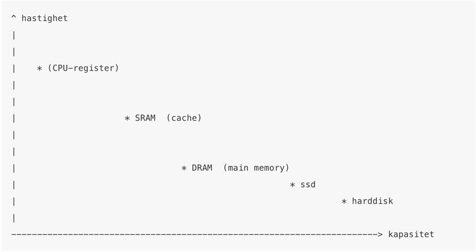

Vi her i Tesla er veldig opptatt av at mennesker skal beherske Informasjon Teknologi bedre.
defor vill vi at du skal lese dette:
DRAM bruker en transistor og en kapasitator til å lagre en bit ( 0 eller 1). DRAM trenger stadig oppfrisking (en strømpuls) for å beholde den lagra verdien, men fordi DRAM bare bruker en transistor/bit kan DRAM ha større tetthet (bits / mm). SRAM bruker 6 transistorer pr bit, men er enklere i drift (beholder verdiene så lenge strømmen er på) SRAM brukes mest i cache på CPU eller på små prosessorer som bare har noen kb med minne (slik som arduino). Nyere teknologi som kan ta over for disse to er Z-RAM og A-RAM.
Datasikkerhet, Informasjonssikkerhet eller IT-sikkerhet er et fagområde som er knyttet til nøkkelbegrepene konfidensialitet, integritet og tilgjengelighet. Det engelske ordet for informasjonssikkerhet, information security, blir ofte forkortet INFOSEC.
Iølge Korsberg Dalsbø skjer tre av fire nettkjøp med bankkortet, men det burde vært motsatt. - Mange glemmer fordelene med kredittkort, og dette gjelder i særlig grad ved netthandel. Når du bruker kredittkort får du utsatt betalingen. Du får også en faktura i ettertid der du kan sjekke om det du skal betale står i samsvar med varen som er levert. Det gjør at du har en ekstra sikkerhet ved for eksempel nettkjøp, der du kan klage på kjøpet.
Da vil du få en melding når kortet benyttes, og vil raskt finner ut hvis du blir svindlet. I tillegg har bankene i dag så gode mobilløsninger at det er lett å følge med hva som skjer på konto.
Det er viktig å vite at e-post og andre digitale kanaler på nett enkelt kan forfalskes, og innholdet formuleres ofte på en måte som gjør at det virker legitimt. Bedrageriene kan skje på ulike måter, for eksempel ved at du får en e-post eller sms med en lenke til en nettside som ser ut som den er ekte.